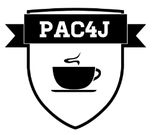
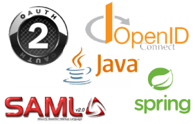

CAS est la solution de SSO utilisée par de nombreuses entreprises et universités en France et dans le monde. Le gouvernement français recommande CAS.
En tant que committer du projet Open Source CAS, j'en suis un des plus gros contributeurs.
⇨ Je suis Jérôme LELEU et je réalise des prestations d'expertise / conseil / développement sur CAS et pac4j, mais également sur les protocoles OAuth, OpenID Connect, SAML et plus généralement sur l'authentification et la sécurité.
⇨ J'habite près de Bordeaux et travaille principalement à distance. Contactez-moi à jerome@casinthecloud.com.
CAS est la solution de SSO utilisée par de nombreuses entreprises et universités en France et dans le monde. Le gouvernement français recommande CAS.
En tant que committer du projet Open Source CAS, j'en suis un des plus gros contributeurs.

C'est un framework de sécurité Java supportant de nombreux mécanismes d'authentification.
Je suis le créateur et leader du projet Open Source pac4j.

Je peux également vous aider sur les protocoles et librairies de sécurité et plus généralement sur les problématiques d'authentification, de sécurité, de SSO et d'IAM : best practices, audit...